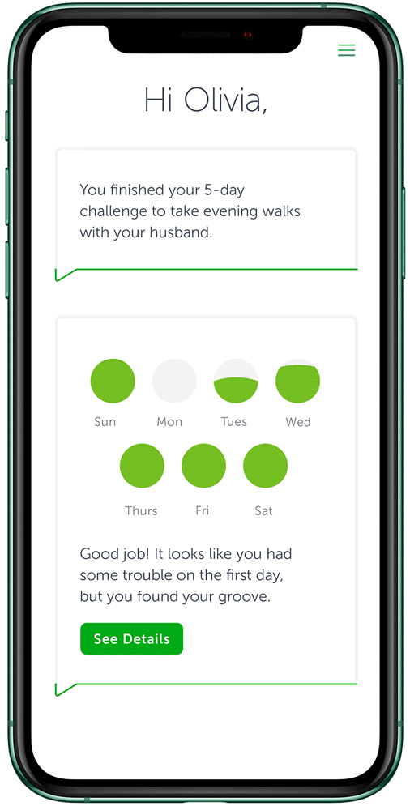

People with poorly controlled diabetes were not consistently following their treatment plans, despite having access to monitoring tools and clinical guidance.
The team assumed the core issue was numeracy: that patients did not understand their blood glucose data.

The team moved away from an education-first concept (a conversational avatar explaining data) toward a behavioral intervention model supported by AI and clinical oversight.
Patients gained clearer understanding of their treatment in the context of their daily behavior, not just their clinical data, and the experience became meaningfully more usable in real-world conditions.